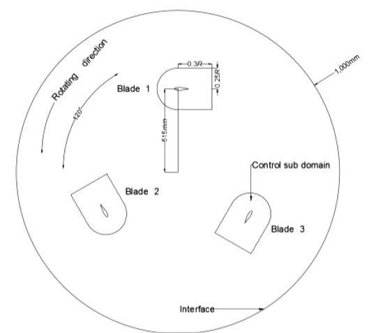
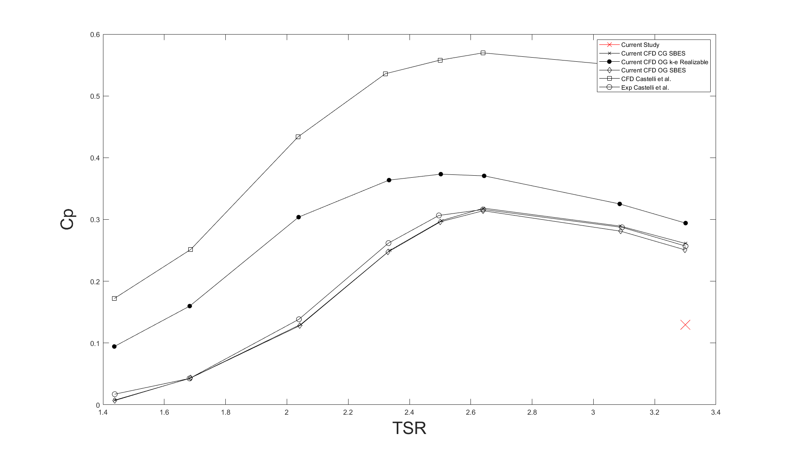

Individual MEng research project · 2025
VAWT Aeroacoustics
How closely could I reproduce a published turbine simulation before extending it into acoustic prediction? This individual investigation used a three-bladed Darrieus vertical-axis wind turbine to connect transient aerodynamics with the reliability of the resulting noise estimates.
Read the full technical case study →
Result and its limits
At a tip-speed ratio of 3.3 and a freestream velocity of 9 m/s, my predicted power coefficient was approximately 0.13, compared with approximately 0.27 in the reference study. The simulation reached periodic behaviour, but this substantial shortfall prevented a claim of quantitative agreement. The FW-H extension produced acoustic results at four receivers; reliable acoustic prediction was not established because the source flow remained insufficiently resolved.
My role and method
I developed the computational domain, sliding-mesh model and refinement strategy in ANSYS Fluent, following the published Transition SST and Stress-Blended Eddy Simulation (SBES) approach. I used MATLAB for post-processing, including frequency-domain analysis of the acoustic receiver histories. The published work supplied the reference geometry and methodology; the model development, comparison and acoustic extension formed my own investigation.
Transition SST treated the near-wall flow, while SBES permitted scale-resolving behaviour where the mesh supported it. The model combined a rotating core with a stationary far-field and local refinement around the blades. I compared power and vortex behaviour with reference results before interpreting the pressure histories through the Ffowcs Williams–Hawkings (FW-H) acoustic analogy.
Engineering judgement
The main constraint was fidelity within the available computation. Local mesh resolution, time-step size, Courant number and numerical dissipation affected the transient structures that supplied the acoustic sources. A repeatable solution was useful for analysis, but did not demonstrate that those structures matched the physical flow. Acoustic spectra therefore had to be read alongside the aerodynamic discrepancy, rather than treated as independent evidence of accuracy.
What I would change
I would treat aerodynamic replication as a gate before acoustic interpretation: run mesh and time-step sensitivity studies, compare both power and wake development, then select an acoustic sampling interval for the intended frequency range. Three-dimensional modelling and experimental microphone comparison remain future work. The full report preserves the setup, plots, references and negative findings so that these limitations can be assessed directly. This distinction between a converged calculation and a physically credible prediction became the central lesson: numerical output needs a traceable comparison before it can support an engineering claim.
